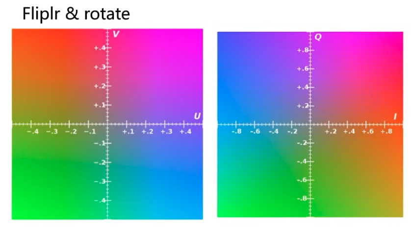
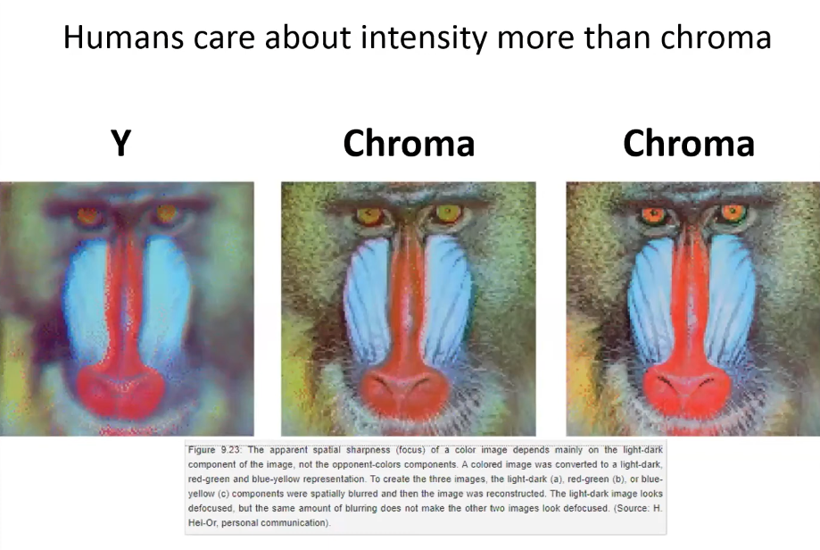

YIQ，YCbCr 和 YUV 彼此十分类似，都是亮度加两个色彩通道。只是YIQ适用于NTSC彩色电视制式，YUV适用于PAL和SECAM彩色电视制式，而YCrCb适用于计算机用的显示器。[1]下图左侧是 YIQ 的色域，右侧是 YUV 的，可见只是反转加旋转就可等价。

人们发现，人眼对 Y 通道的变化很敏感，而对后两个颜色通道的变化不敏感，所以可以采用去除颜色通道高频成分的方式来压缩图片。
